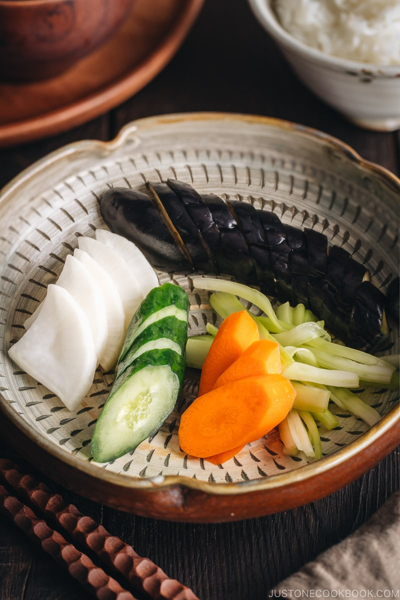

Tsukemono - Shiozuke

Description
Shiozuke is the simplest Japanese pickle – Tsukemono. All you need is salt, water, and fresh seasonal vegetables. Try this pickle today to serve with your Japanese steamed rice and miso soup!
Ingredients
- 3 Japanese or Chinese eggplant
- 5 Japanese or Persian cucumbers
- 1 daikon radish
- 5 celeries
- 2 carrots
- 1 tsp sugar
- 1000 ml water
- 20-100 g sea salt (for 2 to 10% brine)
Instructions
-
Gather all the ingredients. Also, prepare a clean container with a lid for each vegetable. You can also put all vegetables (except for eggplants) in one big container.
-
Put the measured water and sea salt in the pot and let the salt dissolved completely over medium heat. You do not need to let it boil. You can turn off the heat once it’s warm and salt is completely dissolved. Let cool. Tip: In winter, it’s fast if you put the pot outside (leaving the lid slightly ajar). In summer, make the brine the previous day.
-
Pour the brine until they are submerged.
-
Keep the tsukemono at room temperature for the best pickling. For my 5% brine, the best pickling time 8 hours. Tip: You can adjust the pickling time according to your preference. Dense vegetable takes longer time to pickle than less dense vegetables. Please read the blog post.
-
Serve on a plate and enjoy!